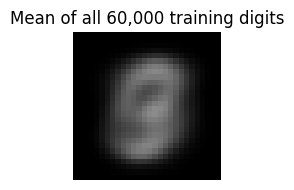
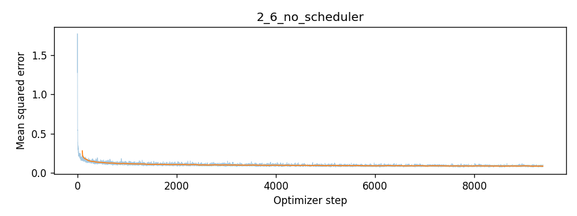

CS 180 · Computational Photography
Flow Matching from Scratch
Training a UNet to remove noise, then learning a time- and class-conditioned velocity field that turns noise into handwritten digits.
Part A explored a pretrained image model. Here I train a UNet from scratch on MNIST, starting with single-step denoising and then learning a velocity field that transforms Gaussian noise into handwritten digits.
All five runs use only the 60,000-image training split. The 10,000-image test split supplies held-out denoising examples. Images are normalized to [0, 1]; noisy inputs and intermediate flow states are not clipped. Displayed panels are clipped for visualization only.
The encoder reduces resolution from 28 to 14 to 7 pixels, then average-pools to a 1 × 1 bottleneck. Transposed convolutions restore spatial resolution. Skip connections concatenate the corresponding encoder features with the decoder features so local stroke information can bypass the bottleneck.
| Stage | Channels × height × width |
|---|---|
| Input / first ConvBlock | 1 × 28 × 28 → D × 28 × 28 |
| DownBlock 1 / 2 | D × 14 × 14 → 2D × 7 × 7 |
| Flatten / Unflatten | 2D × 1 × 1 → 2D × 7 × 7 |
| Skip + UpBlock 1 | 4D × 7 × 7 → D × 14 × 14 |
| Skip + UpBlock 2 | 2D × 14 × 14 → D × 28 × 28 |
| Skip + ConvBlock + output convolution | 2D × 28 × 28 → 1 × 28 × 28 |
Each convolution block uses convolution, batch normalization, and GELU. The output convolution has no activation: a flow prediction must be able to take either sign.
Implementation
class Conv(nn.Sequential):
def __init__(self, in_channels: int, out_channels: int):
super().__init__(nn.Conv2d(in_channels, out_channels, 3, 1, 1),
nn.BatchNorm2d(out_channels), nn.GELU())
class DownConv(nn.Sequential):
def __init__(self, in_channels: int, out_channels: int):
super().__init__(nn.Conv2d(in_channels, out_channels, 3, 2, 1),
nn.BatchNorm2d(out_channels), nn.GELU())
class UpConv(nn.Sequential):
def __init__(self, in_channels: int, out_channels: int):
super().__init__(nn.ConvTranspose2d(in_channels, out_channels, 4, 2, 1),
nn.BatchNorm2d(out_channels), nn.GELU())
class Flatten(nn.Sequential):
def __init__(self):
super().__init__(nn.AvgPool2d(7), nn.GELU())
class Unflatten(nn.Sequential):
def __init__(self, in_channels: int):
super().__init__(nn.ConvTranspose2d(in_channels, in_channels, 7, 7, 0),
nn.BatchNorm2d(in_channels), nn.GELU())
class ConvBlock(nn.Sequential):
def __init__(self, in_channels: int, out_channels: int):
super().__init__(Conv(in_channels, out_channels), Conv(out_channels, out_channels))
class DownBlock(nn.Sequential):
def __init__(self, in_channels: int, out_channels: int):
super().__init__(DownConv(in_channels, out_channels), ConvBlock(out_channels, out_channels))
class UpBlock(nn.Sequential):
def __init__(self, in_channels: int, out_channels: int):
super().__init__(UpConv(in_channels, out_channels), ConvBlock(out_channels, out_channels))Implementation
class UnconditionalUNet(nn.Module):
def __init__(self, in_channels: int, num_hiddens: int):
super().__init__()
d = num_hiddens
self.conv = ConvBlock(in_channels, d)
self.down1 = DownBlock(d, d)
self.down2 = DownBlock(d, 2*d)
self.flatten = Flatten()
self.unflatten = Unflatten(2*d)
self.up1 = UpBlock(4*d, d)
self.up2 = UpBlock(2*d, d)
self.out = nn.Sequential(ConvBlock(2*d, d), nn.Conv2d(d, in_channels, 3, 1, 1))
def encode(self, x):
assert x.shape[-2:] == (28, 28)
h0 = self.conv(x) # D x 28 x 28
h1 = self.down1(h0) # D x 14 x 14
h2 = self.down2(h1) # 2D x 7 x 7
return h0, h1, h2, self.unflatten(self.flatten(h2))
def forward(self, x):
h0, h1, h2, u = self.encode(x)
u = self.up1(torch.cat((h2, u), dim=1))
u = self.up2(torch.cat((h1, u), dim=1))
return self.out(torch.cat((h0, u), dim=1))
# Verify all skip-connection shapes before the expensive training runs.
with torch.no_grad():
_check = UnconditionalUNet(1, 8)
assert _check(torch.randn(2, 1, 28, 28)).shape == (2, 1, 28, 28)
del _checkI add independent Gaussian noise to clean images: z = x + σε. The sweep below holds the clean test digit and noise tensor fixed and changes only σ. A shared display scale makes the increasing corruption visible.

At σ = 0.2 the seven is still easy to recognize. By σ = 0.5 its thin strokes compete with the background speckles, and at σ = 1 the image is dominated by noise. Holding the underlying noise fixed makes the change in signal strength clear.
I train a D = 128 UNet for five epochs with batch size 256 and Adam at 10⁻⁴. Fresh σ = 0.5 noise is drawn after each batch is fetched, so the network sees different corruptions each epoch. The objective is the mean squared pixel error between the prediction and the clean digit.
L = E[‖Dθ(x + 0.5ε) − x‖²]
Implementation
if GROUP in ('all','denoise'):
def denoise_objective(net, x, labels):
noisy = x + noise_level*torch.randn_like(x)
return F.mse_loss(net(noisy).float(), x.float())
train_losses = train_epochs(model, 'denoise', train_loader, num_epochs, learning_rate,
denoise_objective, denoising_panel)


After one epoch, the denoiser already recovers all ten digits and removes most background noise. By epoch five, strokes look cleaner and more consistent, although small details are smoothed. The epoch-average training MSE falls from 0.020798 to 0.008302; that is a training measurement rather than a full-test-set score.
The model only trained at σ = 0.5. I now vary the corruption level while holding the test image and Gaussian draw fixed, so the sweep tests how well one noise-specific denoiser transfers. No retraining occurs.

The seven remains recognizable across the sweep, but the denoiser's behavior changes away from its training noise level. With little noise it slightly smooths an already clean input. At σ = 0.8 and 1.0, extra strokes and background artifacts appear, and the reconstructed seven becomes less faithful. Training at one noise level does not make the network equally reliable at every noise level.
For this independent run, the input is pure Gaussian noise and the target is an independently selected clean training digit. Architecture, batch size, optimizer, and five-epoch budget match the previous experiment.
With squared error, the optimal predictor is the conditional mean E[x | ε]. Since ε carries no information about the target digit, this reduces to E[x], the average of the training distribution. This objective therefore favors a blurry average rather than diverse handwritten digits.



Different Gaussian inputs produce nearly the same fuzzy, oval, digit-like shape at both checkpoints. Training for five epochs makes that average more consistent, not more diverse. The predictions resemble the pixelwise training-set mean shown below. This matches the MSE argument: the input is independent of the target, so predicting an average minimizes the expected squared error. The final epoch MSE is 0.067404, far above the information-preserving denoising run.
Flow matching supplies the missing information by training on intermediate states between noise x₀ and a clean digit x₁. A time-conditioned UNet predicts the velocity along this straight interpolation path rather than predicting the clean image directly.
xt = (1 − t)x0 + tx1 ; u = x1 − x0
Two fully connected blocks embed the scalar t. Their 2D- and D-channel outputs multiply the unflattened bottleneck and the first upsampled feature map, respectively. Time is already normalized to [0, 1].
Implementation
class FCBlock(nn.Sequential):
def __init__(self, in_channels: int, out_channels: int):
super().__init__(nn.Linear(in_channels, out_channels), nn.GELU(),
nn.Linear(out_channels, out_channels))
class TimeConditionalUNet(UnconditionalUNet):
def __init__(self, in_channels: int, num_classes: int, num_hiddens: int):
super().__init__(in_channels, num_hiddens)
self.fc1_t = FCBlock(1, 2*num_hiddens)
self.fc2_t = FCBlock(1, num_hiddens)
def forward(self, x, t):
h0, h1, h2, u = self.encode(x)
t = t.reshape(-1, 1).to(dtype=x.dtype)
u = u * self.fc1_t(t)[:,:,None,None]
u = self.up1(torch.cat((h2, u), dim=1))
u = u * self.fc2_t(t)[:,:,None,None]
u = self.up2(torch.cat((h1, u), dim=1))
return self.out(torch.cat((h0, u), dim=1))I sample a fresh Gaussian x₀ and a uniform t independently for every image in every batch. The loss compares the predicted velocity against x₁ − x₀. This run uses D = 64, batch size 64, ten epochs, and Adam starting at 0.01. An exponential scheduler multiplies the learning rate by 0.11/10 after each epoch.
Implementation
def time_fm_forward(unet, x_1, num_ts):
# Continuous time, normalized to [0,1]; num_ts controls the sampler only.
unet.train()
x_0 = torch.randn_like(x_1)
t = torch.rand(x_1.shape[0], device=x_1.device)
xt = (1-t[:,None,None,None])*x_0 + t[:,None,None,None]*x_1
velocity = unet(xt, t)
return F.mse_loss(velocity.float(), (x_1-x_0).float())
Sampling starts at Gaussian noise and advances with 50 Euler updates of size 1/50. Each update uses the current state and time. The same 40 initial noise samples are reused at all three checkpoints; there is no clipping inside the integration loop.
Implementation
@torch.inference_mode()
def time_fm_sample(unet, img_wh, num_ts, seed=0):
unet.eval()
dev = next(unet.parameters()).device
generator = torch.Generator(device=dev).manual_seed(seed)
x = torch.randn((40,1,*img_wh), generator=generator, device=dev)
for k in range(num_ts):
t = torch.full((len(x),), k/num_ts, device=dev)
with amp_context(): velocity = unet(x, t)
x = x + velocity.float()/num_ts
return x


At epoch one, several samples have broken strokes or ambiguous shapes. The epoch-five and epoch-ten grids contain more recognizable digits, including clear zeros, sevens, and threes, but some examples still mix shapes or remain hard to classify. The final epoch-average velocity MSE is 0.090617. Unlike the pure-noise one-step model, iterative flow matching produces varied samples because it learns how the distribution changes with time.
I represent the requested digit as a ten-dimensional one-hot vector. Two new fully connected blocks modulate the same decoder features: c₁ ⊙ unflatten + t₁, then c₂ ⊙ up₁ + t₂. For 10% of training examples I zero the one-hot vector, teaching the same model to predict an unconditional velocity.
Dropping the class means a zero vector, not the one-hot encoding of digit zero. A notebook check verifies that different labels produce identical predictions when their conditioning masks are zero.
Implementation
class ClassConditionalUNet(UnconditionalUNet):
def __init__(self, in_channels: int, num_classes: int, num_hiddens: int):
super().__init__(in_channels, num_hiddens)
self.num_classes = num_classes
self.fc1_t = FCBlock(1, 2*num_hiddens)
self.fc2_t = FCBlock(1, num_hiddens)
self.fc1_c = FCBlock(num_classes, 2*num_hiddens)
self.fc2_c = FCBlock(num_classes, num_hiddens)
def forward(self, x, c, t, mask=None):
h0, h1, h2, u = self.encode(x)
t = t.reshape(-1,1).to(dtype=x.dtype)
onehot = F.one_hot(c.long(), self.num_classes).to(dtype=x.dtype)
if mask is not None: onehot = onehot * mask.reshape(-1,1)
u = self.fc1_c(onehot)[:,:,None,None]*u + self.fc1_t(t)[:,:,None,None]
u = self.up1(torch.cat((h2, u), dim=1))
u = self.fc2_c(onehot)[:,:,None,None]*u + self.fc2_t(t)[:,:,None,None]
u = self.up2(torch.cat((h1, u), dim=1))
return self.out(torch.cat((h0, u), dim=1))Implementation
def class_fm_forward(unet, x_1, c, p_uncond, num_ts):
unet.train()
x_0 = torch.randn_like(x_1)
t = torch.rand(len(x_1), device=x_1.device)
xt = (1-t[:,None,None,None])*x_0 + t[:,None,None,None]*x_1
keep = (torch.rand(len(x_1), device=x_1.device) >= p_uncond).to(x_1.dtype)
prediction = unet(xt, c, t, keep)
return F.mse_loss(prediction.float(), (x_1-x_0).float())The training budget and scheduler match the time-only flow model: ten epochs, D = 64, batch size 64, Adam at 0.01 with exponential decay. Sampling uses 300 Euler steps and classifier-free guidance γ = 5.
vguided = vuncond + 5(vcond − vuncond)
At each step I evaluate the conditioned and zero-condition branches in one concatenated batch. Each grid contains four instances of every digit, arranged with columns 0–9. Checkpoints share the same initial Gaussian states.
Implementation
@torch.inference_mode()
def class_fm_sample(unet, c, img_wh, num_ts, guidance_scale=5.0, seed=0):
unet.eval()
dev = next(unet.parameters()).device
c = c.to(dev)
generator = torch.Generator(device=dev).manual_seed(seed)
x = torch.randn((len(c),1,*img_wh), generator=generator, device=dev)
cache = [x.detach().cpu()]
# Evaluate conditional and unconditional branches in one batch.
conditions = torch.cat((c,c))
masks = torch.cat((torch.zeros(len(c),device=dev), torch.ones(len(c),device=dev)))
for k in range(num_ts):
t = torch.full((2*len(c),), k/num_ts, device=dev)
with amp_context():
vu, vc = unet(torch.cat((x,x)), conditions, t, masks).chunk(2)
velocity = vu.float() + guidance_scale*(vc.float()-vu.float())
x = x + velocity/num_ts
if (k+1) % max(1,num_ts//20) == 0 or k+1 == num_ts: cache.append(x.detach().cpu())
return x, torch.stack(cache, dim=1)


Class conditioning makes the requested column structure apparent even after the first epoch, although some early strokes are rough. At epochs five and ten, all ten columns are clearly recognizable as their requested digits, with variations in slant, loop shape, and stroke thickness across rows. The final training MSE is 0.084725. The time-only and class-conditioned grids also use different step counts and guidance, so the visual comparison reflects the complete prescribed sampling setups as well as the added class information.
I train a fresh class-conditioned model for ten epochs with a constant Adam learning rate of 0.003. This is close to the geometric midpoint of the original 0.01-to-0.001 schedule and avoids retaining the largest update size throughout training. Architecture, dataset, seed, batch size, class dropout, epoch budget, guidance, and sampling steps stay the same.
The paired final grids use identical initial noise and class labels. I compare the actual visual quality and losses below rather than assuming that matching a training loss guarantees equally good samples.



The constant-0.003 run produces recognizable digits in every column, with broadly similar visual quality to the scheduled run in this fixed-seed sample grid. Its final epoch-average velocity MSE is 0.086433 versus 0.084725 with the scheduler, about 2.0% higher. Reducing the fixed learning rate from the original 0.01 compensates for losing late-training decay. This single paired grid supports comparable quality here; it does not establish identical performance across all seeds.
Epoch-average training MSE. Denoising losses and velocity-prediction losses are different objectives and should not be compared as the same quality score. Times below sum training loops and exclude sampling and export.
| Run | First epoch | Final epoch | Training time |
|---|---|---|---|
| denoise | 0.020798 | 0.008302 | 3.4 min |
| pure_noise | 0.073616 | 0.067404 | 3.7 min |
| time_flow | 0.168876 | 0.090617 | 3.3 min |
| class_flow | 0.165552 | 0.084725 | 3.4 min |
| class_constant_lr | 0.148212 | 0.086433 | 3.3 min |
The complete notebook contains the architecture, training loops, sampling code, fixed-seed comparisons, and export. The metrics file preserves epoch averages, learning rates, runtime, GPU, and library version. Raw optimizer-step losses are included for the class-conditioned runs; the earlier runtime expired, so its denoising and time-only loss curves and epoch summaries were recovered from the notebook outputs. Each model starts from fresh weights; no pretrained image model is used.
| Experiment | D | Batch | Epochs | Adam learning rate |
|---|---|---|---|---|
| Denoising / pure noise (separate runs) | 128 | 256 | 5 each | 0.0001 |
| Time / class flow (separate runs) | 64 | 64 | 10 each | 0.01 × 0.1(epoch−1)/10 |
| Class flow without scheduler | 64 | 64 | 10 | 0.003 constant |
Training uses CUDA mixed precision with float32 MSE and Euler state accumulation. Checkpoints are saved at every epoch, with separate weights retained at epochs 1, 5, and 10 where applicable. This page covers the CS180 deliverables.
I learned that removing noise from a recognizable digit and generating a digit from pure noise are different learning problems. The σ = 0.5 denoiser can recover strokes because its input still contains information about the target. When I remove that information and train on independent pure noise, the same MSE objective pushes the model toward a blurry average instead of a new digit.
Flow matching gave me a way around that collapse. By training at intermediate times and predicting x₁ − x₀, I learned a direction of motion rather than asking for an entire image in one step. Repeated Euler updates produced diverse handwritten shapes, and later checkpoints improved their readability.
I also saw how conditioning changes control. Time tells the model where it is along the path; a one-hot class vector tells it which digit to generate. Dropping the class vector during training makes unconditional predictions available for classifier-free guidance. The class-conditioned grids were much easier to interpret than the time-only grids, while still showing different handwriting styles within each column.
Finally, I found that a scheduler is useful but not essential for this setup. A smaller constant learning rate of 0.003 produced similarly readable samples after the same ten-epoch budget, with a slightly higher training loss. I would compare more seeds and a separate evaluation measure before claiming the two training choices are equivalent.